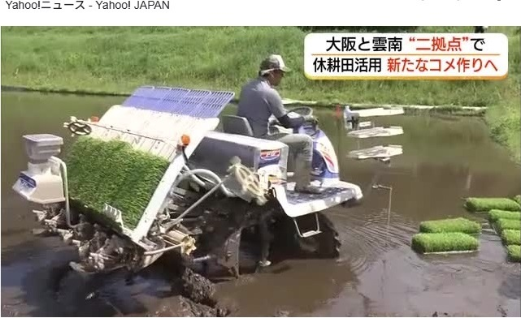
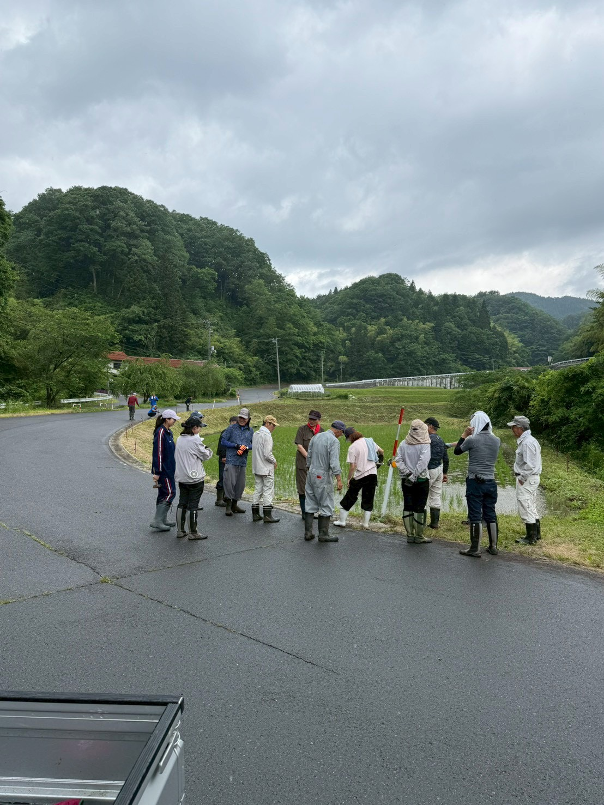
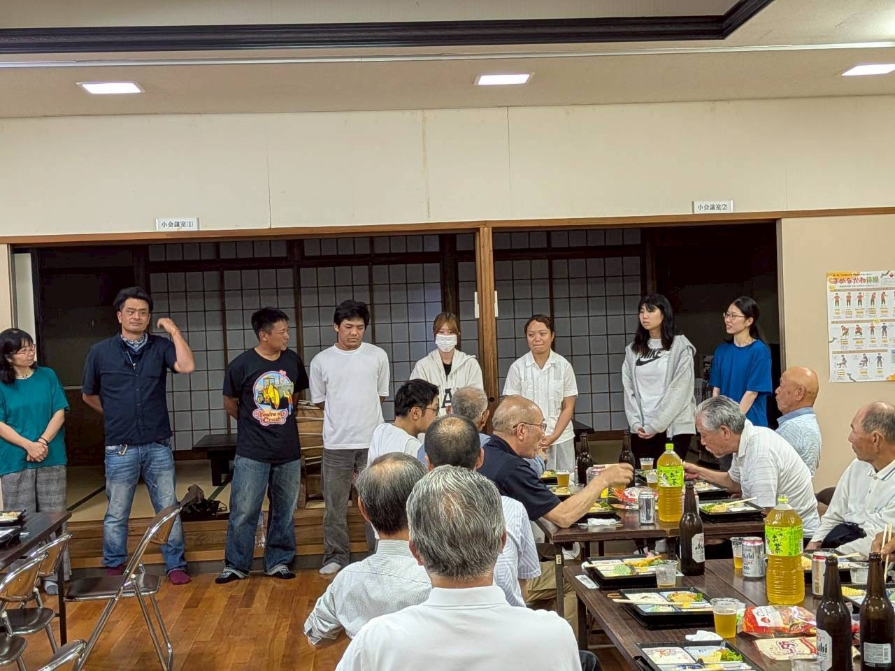
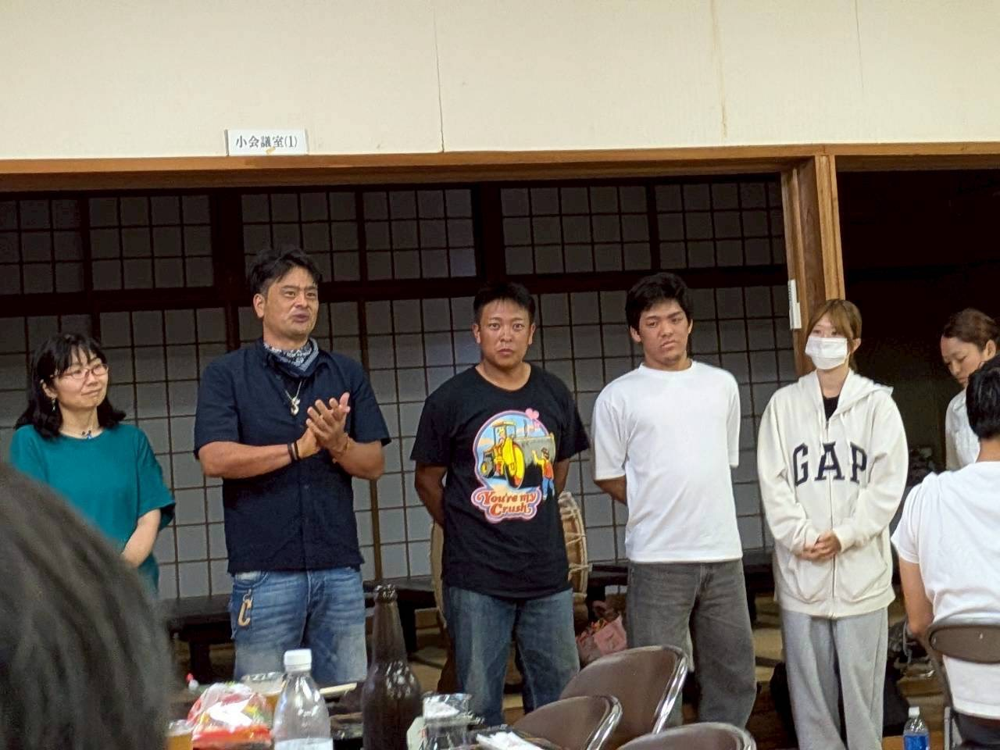
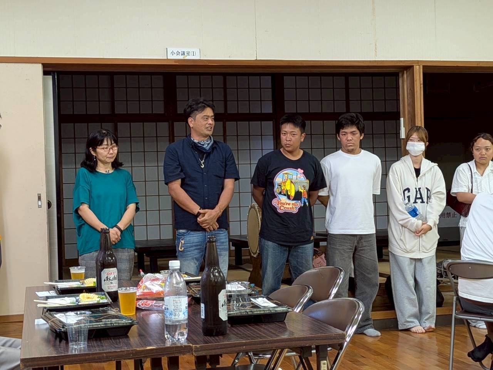
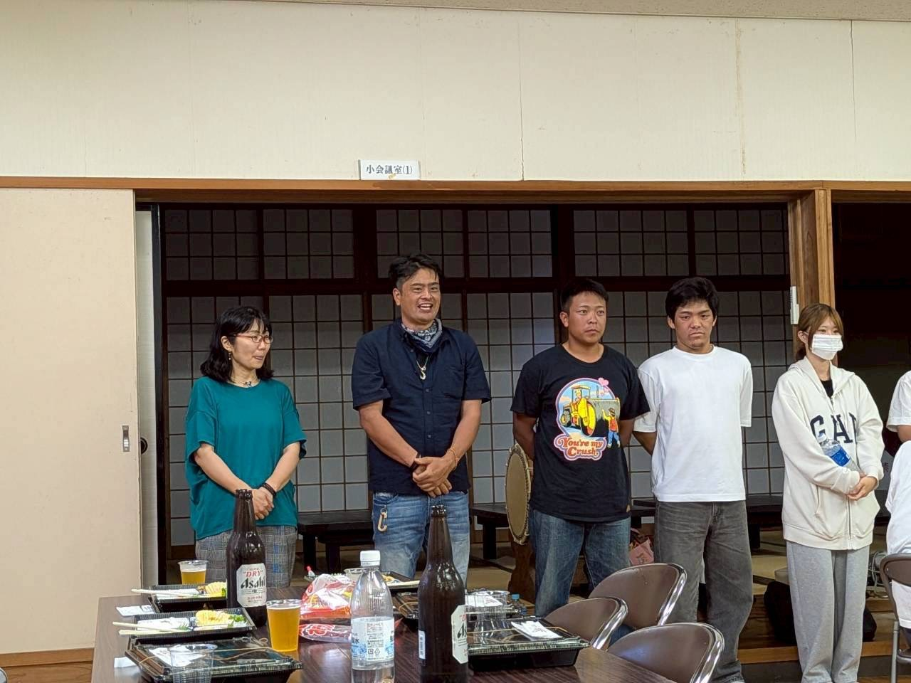
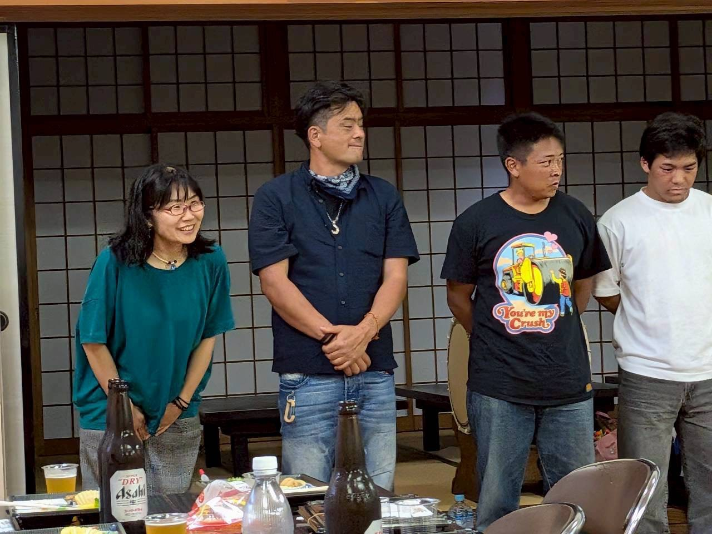
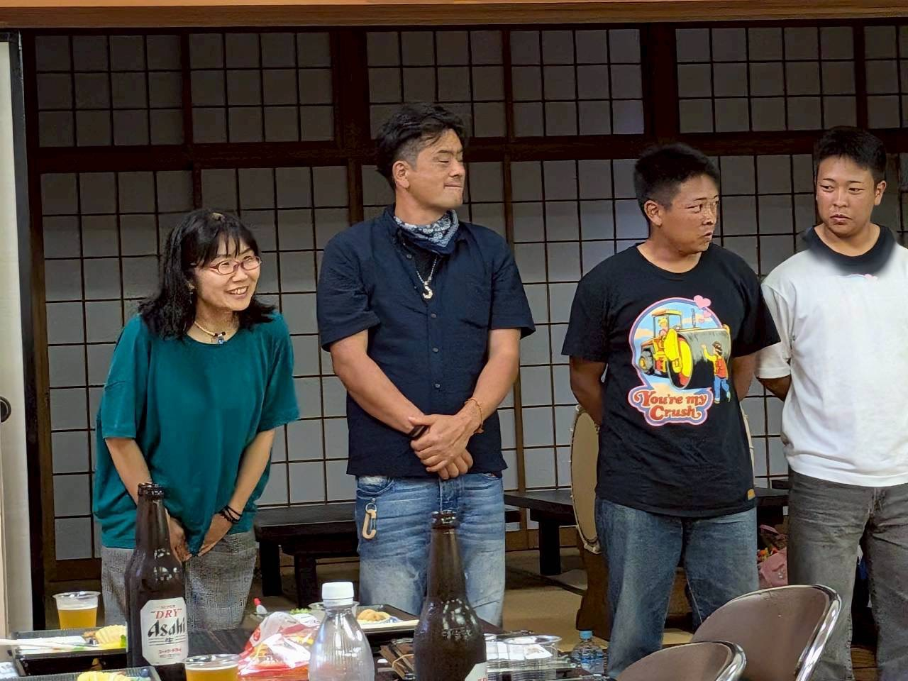
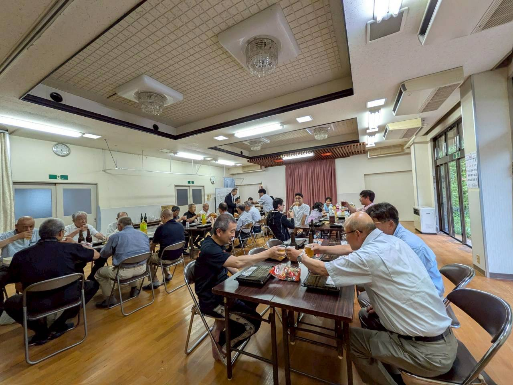

大阪から運び込まれた田植え機
雲南市の農家と大阪の農業法人が連携し、
雲南市にある休耕田を活用したコメ作りが始まりました。
作業の分担で担い手を確保し、持続可能なコメ作りを目指します。
5月13日朝、雲南市木次町に姿を見せたのは「大阪」ナンバーのトラック。
荷台には田植え機。すでに苗がセットされています。
これから「田植え」を始めます。
雲南市では高齢化による担い手不足などの影響で、全体の約4分の1にあたる約1200ヘクタールの田んぼが荒廃し、作付けが行われていません。
うした田んぼを活用し、始まったのが大阪府八尾市の農業法人による「二拠点農業」。
雲南市の3つの地区にある5ヘクタールの休耕田でコメを作ります。
雲南市・石飛市長：
農業の後継者が不足する中で休耕田がどんどん増えているんですね。
その休耕地を増やさないこと、外の方の力を借りながら環境を維持していくということをチャレンジしていきたい。
大阪の農業法人が農機や作業スタッフを提供、雲南市の農家から委託された農地で田植えから収穫までを行います。
作業を終えるとスタッフは大阪に戻り、不在となりますが、水の管理や除草、肥料散布などの「世話」を雲南市の農家が引き受け、業務委託費を受け取ります。
農業法人は大阪と雲南市でコメを作りますが、田植えや稲刈りの時期には約1か月の時差があり、機械や作業スタッフを有効活用できます。
また、作業を分担することで雲南市の農家も負担が軽減されます。
ゆーかりファーム・橋本和則さん：
長いこと植えられなかった田んぼにコメを何年振りかにに植えるっていうことは1つゴールができたんじゃないかなと。
一方、大阪でも農地が高く、広い農地が必要なコメ作り。
大阪では経営規模を拡大したくても農地が確保できないことから、橋本さんは知人を通じて紹介された雲南市を第2の拠点にコメ作りを拡大することにしました。
雲南市農業委員会・松原利広さん：
うれしいです。最高です。橋本さんと協力しながら進めていきたい。
ゆーかりファーム・橋本和則さん：
地元と協力してやっていこうという方が1人でも増えると、少しでも日本の農地を維持できるんじゃないか（と思う）。
雲南市は今後、収穫されたコメを大阪など都市部でも直接販売できるよう協力することにしています。
雲南市・石飛市長：
雲南のコメをコメ作りの現場からできたコメを知ってもらうことで認知が広がって、たくさんの方に食べていただけるきっかけになるんじゃないかなと。
「担い手不足」や「休耕田」「耕作放棄地」など農業の課題解消にもつながると期待されます。
コメ作りから販売まで一体化 地元の雲南市も後押し
雲南市は、この取り組みをコメ作りだけにとどめるつもりはない。
収穫されたコメを大阪など都市部でも直接販売できるよう、市としてサポートしていく方針だ。
石飛市長は「雲南のコメを、コメ作りの現場からできたコメを知ってもらうことで認知が広がって、たくさんの方に食べていただけるきっかけになるんじゃないか」と期待を語る。
産地直結の販売は、生産者の収益向上にもつながる可能性がある。
担い手不足、休耕田の増加、耕作放棄地の拡大。
これらは雲南市だけの問題ではなく、日本全国の農村が直面する共通の課題だ。
大阪と雲南市をまたぐ「二拠点農業」は、その課題に対するひとつの現実的な答えとして、静かに動き始めた。










